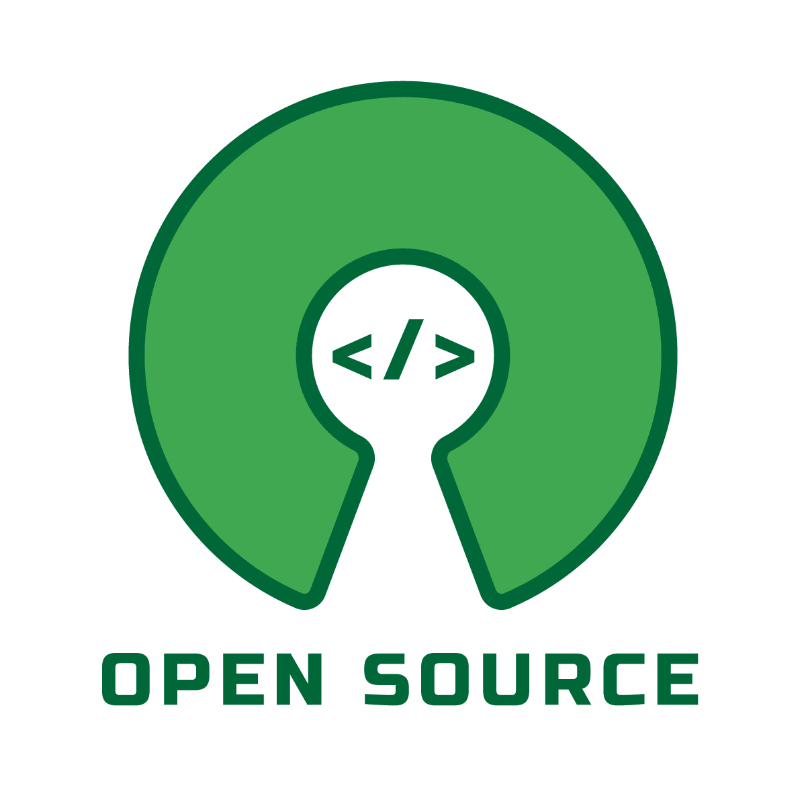
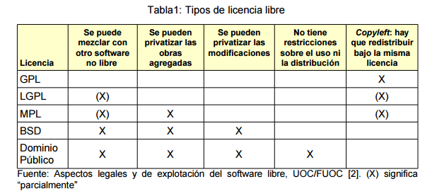

Licencias
Licenciamiento: Definiciones y Conceptos Clave
Un contrato entre el programador y el usuario que define los derechos y deberes de cada parte. El programador decide el tipo de licencia bajo la cual se distribuirá el software.
Software Libre (SL)
Debe cumplir con las siguientes cuatro libertades:
Usarlo sin restricciones.
Estudiarlo y adaptarlo a las necesidades del usuario.
Redistribuirlo.
Mejorarlo y compartir las modificaciones.
Nota importante:
Para cumplir con estas libertades, es imprescindible tener acceso al código fuente.
El software libre se refiere a libertades, no a precio.
Puede distribuirse bajo diferentes tipos de licencias.
Las licencias libres no deben imponer restricciones que contradigan las cuatro libertades.
Fundaciones y Organizaciones
FSF (Free Software Foundation): Organización que promueve el software libre. Más información.

OSI (Open Source Initiative): Promueve el software de código abierto. Licencias OSI.
Tipos de Software
Software de dominio público: No requiere licencia, puede ser usado por toda la humanidad sin restricciones legales, siempre mencionando al autor original.
Software semilibre: Conserva características del SL para uso personal o educativo sin fines comerciales, pero restringe su uso comercial.
Software gratuito (freeware): Puede redistribuirse libremente, pero no modificarse porque no incluye acceso al código fuente.
Software propietario o privativo: Requiere permiso o pago para usar, modificar o redistribuir. También conocido como software no libre.
Derechos de Autor y Propiedad Intelectual
Copyright: Protege los derechos del autor sobre su obra, permitiendo su explotación comercial bajo ciertas condiciones.

Copyleft: Garantiza que cualquier usuario pueda usar, modificar y redistribuir una obra derivada bajo las mismas condiciones que la original.
Tipos de Licencias de Software
Licencias de Software Propietario
CLUF (Contrato de Licencia para el Usuario Final): Permite el uso del producto solo a un usuario específico.
Licencias RDS (Remote Desktop Services): Necesarias para acceder a servidores de forma remota.
Licencias de Software Libre
Permisivas:
Ejemplo: BSD, Apache, MIT.
Permiten redistribución incluso bajo licencias privativas.
Ventaja: Facilitan la integración con software propietario.
Robustas o viral:
Ejemplo: GPL (General Public License).
Prioriza la libertad del usuario final mediante copyleft.
Obliga a que las obras derivadas mantengan las mismas libertades que el original.
LGPL (Lesser General Public License):
Variante más permisiva que la GPL.
Permite combinar software libre con software propietario en ciertos casos.
Doble Licenciamiento o Multilicencia:
Permite elegir entre diferentes tipos de licencias según las necesidades del usuario.

Creative Commons y Otros Recursos Las licencias Creative Commons son una alternativa para proteger obras creativas permitiendo ciertos usos bajo condiciones específicas.